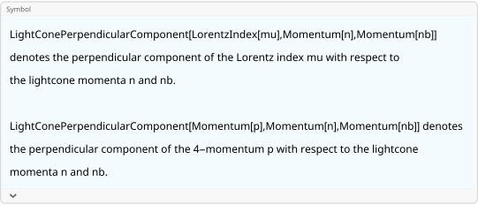

FeynCalc is equipped with special symbols that facilitate
calculations involving light-cone vectors. The default n and \bar{n} vectors are defined via the global
variables $FCDefaultLightconeVectorN and
$FCDefaultLightconeVectorNB. By default those are set to
FCGV["n"] and FCGV["nb"] to avoid possible
conflicts with user-defined variables
{$FCDefaultLightconeVectorN, $FCDefaultLightconeVectorNB}\{\text{FCGV}(\text{n}),\text{FCGV}(\text{nb})\}
These names can be of course changed. A particularly convenient
choice is to use n and nb. Notice that these
commands must be evaluated at the beginning of every FeynCalc
session
$FCDefaultLightconeVectorN = n;
$FCDefaultLightconeVectorNB = nb;Apart from this you must also explicitly define the values of the scalar products n^2, \bar{n}^2 and n \cdot \bar{n}
FCClearScalarProducts[]
ScalarProduct[n] = 0;
ScalarProduct[nb] = 0;
ScalarProduct[n, nb] = 2;The Plus, Minus and peRpendicular components of 4-vectors are called
FVLP, FVLN and FVLR respectively.
The plus and minus components are immediately rewritten into forms
involving n and \bar{n}. The perpendicular component is a
separate entity that cannot be simplified further.
{FVLP[p, \[Mu]], FVLN[p, \[Mu]], FVLR[p, \[Mu]]}\left\{\frac{1}{2} \overline{\text{nb}}^{\mu } \left(\overline{n}\cdot \overline{p}\right),\frac{1}{2} \overline{n}^{\mu } \left(\overline{\text{nb}}\cdot \overline{p}\right),\overline{p}^{\mu }{}_{\perp }\right\}
{FVLPD[p, \[Mu]], FVLND[p, \[Mu]], FVLRD[p, \[Mu]]}\left\{\frac{1}{2} \;\text{nb}^{\mu } (n\cdot p),\frac{1}{2} n^{\mu } (\text{nb}\cdot p),p^{\mu }{}_{\perp }\right\}
It is also possible to specify your own symbols for the light-cone vectors thus overriding what is set via the global variables
FVLR[p, mu, myN, myNB]
% // FCI // StandardForm\overline{p}^{\text{mu}}{}_{\perp }
(*Pair[LightConePerpendicularComponent[LorentzIndex[mu], Momentum[myN], Momentum[myNB]], LightConePerpendicularComponent[Momentum[p], Momentum[myN], Momentum[myNB]]]*)Internally, the perpendicular component is implemented as an extra
head wrapped around such internal symbols as LorentzIndex
or Momentum. This head is called
LightConePerpendicularComponent and has 3 arguments. The
last two arguments specify the light-cone vectors.
?LightConePerpendicularComponent
The pattern introduced for 4-vectors can be also found when working scalar products, metric tensors or Dirac matrices
{SPLP[p, q], SPLN[p, q], SPLR[p, q]}\left\{\frac{1}{2} \left(\overline{n}\cdot \overline{p}\right) \left(\overline{\text{nb}}\cdot \overline{q}\right),\frac{1}{2} \left(\overline{n}\cdot \overline{q}\right) \left(\overline{\text{nb}}\cdot \overline{p}\right),\overline{p}\cdot \overline{q}_{\perp }\right\}
{SPLPD[p, q], SPLND[p, q], SPLRD[p, q]}\left\{\frac{1}{2} (n\cdot p) (\text{nb}\cdot q),\frac{1}{2} (n\cdot q) (\text{nb}\cdot p),p\cdot q_{\perp }\right\}
{MTLP[\[Mu], \[Nu]], MTLN[\[Mu], \[Nu]], MTLR[\[Mu], \[Nu]]}\left\{\frac{1}{2} \overline{n}^{\nu } \overline{\text{nb}}^{\mu },\frac{1}{2} \overline{n}^{\mu } \overline{\text{nb}}^{\nu },\bar{g}^{\mu \nu }{}_{\perp }\right\}
{GALP[\[Mu]], GALN[\[Mu]], GALR[\[Mu]]}\left\{\frac{1}{2} \overline{\text{nb}}^{\mu } \bar{\gamma }\cdot \overline{n},\frac{1}{2} \overline{n}^{\mu } \bar{\gamma }\cdot \overline{\text{nb}},\bar{\gamma }^{\mu }{}_{\perp }\right\}
{GSLP[\[Mu]], GSLN[\[Mu]], GSLR[\[Mu]]}\left\{\frac{1}{2} \bar{\gamma }\cdot \overline{n} \left(\overline{\text{nb}}\cdot \overline{\mu }\right),\frac{1}{2} \left(\overline{n}\cdot \overline{\mu }\right) \bar{\gamma }\cdot \overline{\text{nb}},\bar{\gamma }\cdot \overline{\mu }_{\perp }\right\}
Contracting the full metric tensor with the perpendicular component returns the latter
MT[\[Mu], \[Nu]] MTLR[\[Mu], \[Rho]]
% // Contract\bar{g}^{\mu \nu } \bar{g}^{\mu \rho }{}_{\perp }
\bar{g}^{\nu \rho }{}_{\perp }
The dimensionality of the perpendicular component is 2 in 4-dimensions and D-2 in D-dimensions
MT[\[Mu], \[Nu]] MTLR[\[Mu], \[Nu]]
% // Contract\bar{g}^{\mu \nu } \bar{g}^{\mu \nu }{}_{\perp }
2
MTD[\[Mu], \[Nu]] MTLRD[\[Mu], \[Nu]]
% // Contractg^{\mu \nu } g^{\mu \nu }{}_{\perp }
D-2
Dirac algebra involving matrices contracted to light-cone momenta or
having particular light-cone components is fully supported. The general
strategy followed by DiracSimplify is to move all
perpendicular components to the very right of the chain.
ex1 = GALR[p] . GA[\[Mu], \[Nu]]\bar{\gamma }^p{}_{\perp }.\bar{\gamma }^{\mu }.\bar{\gamma }^{\nu }
ex1 // DiracSimplify-\frac{1}{2} \overline{n}^{\mu } \left(\bar{\gamma }\cdot \overline{\text{nb}}\right).\bar{\gamma }^p{}_{\perp }.\bar{\gamma }^{\nu }{}_{\perp }-\frac{1}{2} \overline{\text{nb}}^{\mu } \left(\bar{\gamma }\cdot \overline{n}\right).\bar{\gamma }^p{}_{\perp }.\bar{\gamma }^{\nu }{}_{\perp }+\frac{1}{2} \overline{n}^{\nu } \left(\bar{\gamma }\cdot \overline{\text{nb}}\right).\bar{\gamma }^p{}_{\perp }.\bar{\gamma }^{\mu }{}_{\perp }+\frac{1}{4} \overline{n}^{\nu } \overline{\text{nb}}^{\mu } \left(\bar{\gamma }\cdot \overline{n}\right).\left(\bar{\gamma }\cdot \overline{\text{nb}}\right).\bar{\gamma }^p{}_{\perp }+\frac{1}{2} \overline{\text{nb}}^{\nu } \left(\bar{\gamma }\cdot \overline{n}\right).\bar{\gamma }^p{}_{\perp }.\bar{\gamma }^{\mu }{}_{\perp }-\frac{1}{4} \overline{n}^{\mu } \overline{\text{nb}}^{\nu } \left(\bar{\gamma }\cdot \overline{n}\right).\left(\bar{\gamma }\cdot \overline{\text{nb}}\right).\bar{\gamma }^p{}_{\perp }+\overline{n}^{\mu } \overline{\text{nb}}^{\nu } \bar{\gamma }^p{}_{\perp }+\bar{\gamma }^p{}_{\perp }.\bar{\gamma }^{\mu }{}_{\perp }.\bar{\gamma }^{\nu }{}_{\perp }
ex2 = GALR[p] . GA[\[Mu], \[Nu]] . GALR[p]\bar{\gamma }^p{}_{\perp }.\bar{\gamma }^{\mu }.\bar{\gamma }^{\nu }.\bar{\gamma }^p{}_{\perp }
ex2 // DiracSimplify-2 \bar{\gamma }^{\mu }{}_{\perp }.\bar{\gamma }^{\nu }{}_{\perp }+4 \bar{g}^{\mu \nu }{}_{\perp }+\frac{1}{2} \overline{n}^{\nu } \overline{\text{nb}}^{\mu } \left(\bar{\gamma }\cdot \overline{n}\right).\left(\bar{\gamma }\cdot \overline{\text{nb}}\right)-\frac{1}{2} \overline{n}^{\mu } \overline{\text{nb}}^{\nu } \left(\bar{\gamma }\cdot \overline{n}\right).\left(\bar{\gamma }\cdot \overline{\text{nb}}\right)+2 \overline{n}^{\mu } \overline{\text{nb}}^{\nu }
Notice that when entering particular light-cone components of Dirac matrices, the standard trick for entering multiple indices does not work. This is because the 2nd and 3rd arguments are reserved for user-specified light-cone vectors
GALR[mu1, myN, myNB]
% // FCI // StandardForm\bar{\gamma }^{\text{mu1}}{}_{\perp }
(*DiracGamma[LightConePerpendicularComponent[LorentzIndex[mu1], Momentum[myN], Momentum[myNB]]]*)Instead, you should put your list of indices into curly brackets
GALR[{\[Mu], \[Nu], \[Rho]}]\bar{\gamma }^{\mu }{}_{\perp }.\bar{\gamma }^{\nu }{}_{\perp }.\bar{\gamma }^{\rho }{}_{\perp }
ex3 = GALR[p] . GALR[{\[Mu], \[Nu]}] . GALR[p]\bar{\gamma }^p{}_{\perp }.\bar{\gamma }^{\mu }{}_{\perp }.\bar{\gamma }^{\nu }{}_{\perp }.\bar{\gamma }^p{}_{\perp }
ex3 // DiracSimplify4 \bar{g}^{\mu \nu }{}_{\perp }-2 \bar{\gamma }^{\mu }{}_{\perp }.\bar{\gamma }^{\nu }{}_{\perp }
ex4 = DiracTrace[GA[\[Rho], \[Sigma]] . GALR[{\[Mu], \[Nu]}]]\text{tr}\left(\bar{\gamma }^{\rho }.\bar{\gamma }^{\sigma }.\bar{\gamma }^{\mu }{}_{\perp }.\bar{\gamma }^{\nu }{}_{\perp }\right)
ex4 // DiracSimplify4 \bar{g}^{\mu \sigma }{}_{\perp } \bar{g}^{\nu \rho }{}_{\perp }-4 \bar{g}^{\mu \rho }{}_{\perp } \bar{g}^{\nu \sigma }{}_{\perp }+4 \bar{g}^{\rho \sigma } \bar{g}^{\mu \nu }{}_{\perp }
ex5 = DiracTrace[GA[\[Rho], \[Sigma]] . GA[5] . GALR[{\[Mu], \[Nu]}]]\text{tr}\left(\bar{\gamma }^{\rho }.\bar{\gamma }^{\sigma }.\bar{\gamma }^5.\bar{\gamma }^{\mu }{}_{\perp }.\bar{\gamma }^{\nu }{}_{\perp }\right)
ex5 // DiracSimplify2 i \overline{n}^{\rho } \bar{\epsilon }^{\mu _{\perp }\nu _{\perp }\sigma _{\perp }\;\overline{\text{nb}}}+2 i \overline{\text{nb}}^{\rho } \bar{\epsilon }^{\mu _{\perp }\nu _{\perp }\sigma _{\perp }\overline{n}}-2 i \overline{n}^{\sigma } \bar{\epsilon }^{\mu _{\perp }\nu _{\perp }\rho _{\perp }\;\overline{\text{nb}}}-i \overline{n}^{\sigma } \overline{\text{nb}}^{\rho } \bar{\epsilon }^{\mu _{\perp }\nu _{\perp }\overline{n}\;\overline{\text{nb}}}-2 i \overline{\text{nb}}^{\sigma } \bar{\epsilon }^{\mu _{\perp }\nu _{\perp }\rho _{\perp }\overline{n}}+i \overline{n}^{\rho } \overline{\text{nb}}^{\sigma } \bar{\epsilon }^{\mu _{\perp }\nu _{\perp }\overline{n}\;\overline{\text{nb}}}-4 i \bar{\epsilon }^{\mu _{\perp }\nu _{\perp }\rho _{\perp }\sigma _{\perp }}
In order to handle Dirac matrices involving light-cone components effectively, one needs to define some ordering. The current (hard-coded) choice is that the perpendicular component always get anticommuted to the very right of each Dirac chain, while every remaining occurence of (\gamma \cdot \bar{n}) (\gamma \cdot n) is changed to (\gamma \cdot n) (\gamma \cdot \bar{n}).
In some calculations one might end up with a mixture of explicit
light-cone components and generic Lorentz tensors. If those tensors
admit a particularly simple representation in terms of light-cone
components, it can be enforced using the function
ToLightConeComponents
For example, the following expression cannot be simplified any further
ex6 = GS[nb, vp]\left(\bar{\gamma }\cdot \overline{\text{nb}}\right).\left(\bar{\gamma }\cdot \overline{\text{vp}}\right)
Now let us suppose that (v')^{\mu} can be actually written as \alpha n^\mu + \bar{n}^{\mu}/(4 \alpha). We can implement this as follows
SP[vp, nb] = 2*alpha;
SP[vp, n] = 2*1/(4 alpha);
LightConePerpendicularComponent[Momentum[vp], Momentum[n], Momentum[nb]] = 0;FV[vp, mu]
% // ToLightConeComponents\overline{\text{vp}}^{\text{mu}}
\text{alpha} \overline{n}^{\text{mu}}+\frac{\overline{\text{nb}}^{\text{mu}}}{4 \;\text{alpha}}
However, this will not make FeynCalc automatically simplify the Dirac chain
ex6 // DiracSimplify\left(\bar{\gamma }\cdot \overline{\text{nb}}\right).\left(\bar{\gamma }\cdot \overline{\text{vp}}\right)
Using ToLightConeComponents we can explicitly rewrite
vp in the chain in terms of the light-cone components and
hence enforce the desired simplification. In fact, the function will
also automatically simplify some common expressions such \gamma \cdot \bar{n} \gamma \cdot \bar{n} = \gamma
\cdot n \gamma \cdot n = 0
ex6 // ToLightConeComponents
% // DiracSimplify\text{alpha} \left(\bar{\gamma }\cdot \overline{\text{nb}}\right).\left(\bar{\gamma }\cdot \overline{n}\right)
4 \;\text{alpha}-\text{alpha} \left(\bar{\gamma }\cdot \overline{n}\right).\left(\bar{\gamma }\cdot \overline{\text{nb}}\right)
Such simplifications inside ToLightConeComponents can be
disabled using the option DotSimplify
ex6 // ToLightConeComponents[#, DotSimplify -> False] &
% // DiracSimplify\left(\bar{\gamma }\cdot \overline{\text{nb}}\right).\left(\text{alpha} \bar{\gamma }\cdot \overline{n}+\frac{\bar{\gamma }\cdot \overline{\text{nb}}}{4 \;\text{alpha}}\right)
4 \;\text{alpha}-\text{alpha} \left(\bar{\gamma }\cdot \overline{n}\right).\left(\bar{\gamma }\cdot \overline{\text{nb}}\right)
int = FVLRD[p, \[Mu]] SFAD[p, p - q]\frac{p^{\mu }{}_{\perp }}{(p^2+i \eta ).((p-q)^2+i \eta )}
TID[int, p]\frac{q^{\mu }{}_{\perp }}{2 (p^2+i \eta ).((p-q)^2+i \eta )}
FourDivergence cannot yet differentiate w.r.t light-cone
components directly. However, the same effect can be easily achieved by
first differentiating w.r.t the usual 4-momentum and then contracting
the free index with the corresponding metric tensor
ex = FV[p1, \[Mu]]/SP[p1]\frac{\overline{\text{p1}}^{\mu }}{\overline{\text{p1}}^2}
Differentiating w.r.t p_{1,+}, p_{1,-} or p_{1,\perp}
MTLN[\[Nu], \[Rho]] FourDivergence[ex, FV[p1, \[Rho]]] // Contract\frac{\overline{n}^{\nu } \overline{\text{nb}}^{\mu }}{2 \overline{\text{p1}}^2}-\frac{\overline{n}^{\nu } \overline{\text{p1}}^{\mu } \left(\overline{\text{nb}}\cdot \overline{\text{p1}}\right)}{\overline{\text{p1}}^4}
MTLP[\[Nu], \[Rho]] FourDivergence[ex, FV[p1, \[Rho]]] // Contract\frac{\overline{n}^{\mu } \overline{\text{nb}}^{\nu }}{2 \overline{\text{p1}}^2}-\frac{\overline{\text{nb}}^{\nu } \overline{\text{p1}}^{\mu } \left(\overline{n}\cdot \overline{\text{p1}}\right)}{\overline{\text{p1}}^4}
MTLR[\[Nu], \[Rho]] FourDivergence[ex, FV[p1, \[Rho]]] // Contract\frac{\bar{g}^{\mu \nu }{}_{\perp }}{\overline{\text{p1}}^2}-\frac{2 \overline{\text{p1}}^{\mu } \overline{\text{p1}}^{\nu }{}_{\perp }}{\overline{\text{p1}}^4}